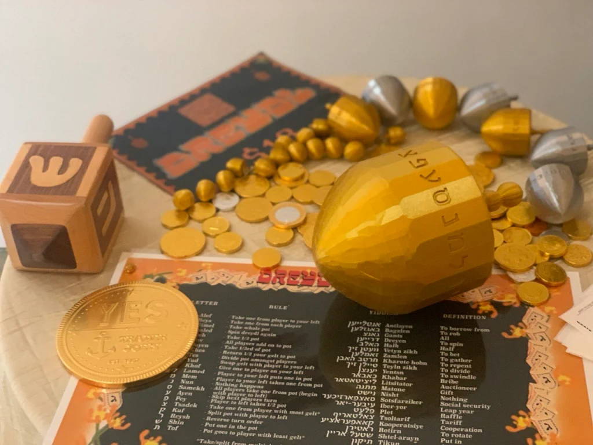
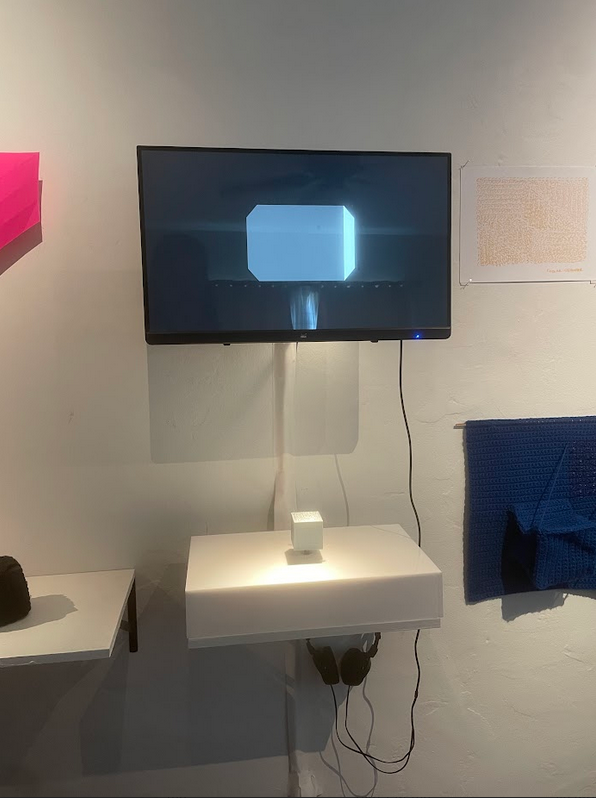
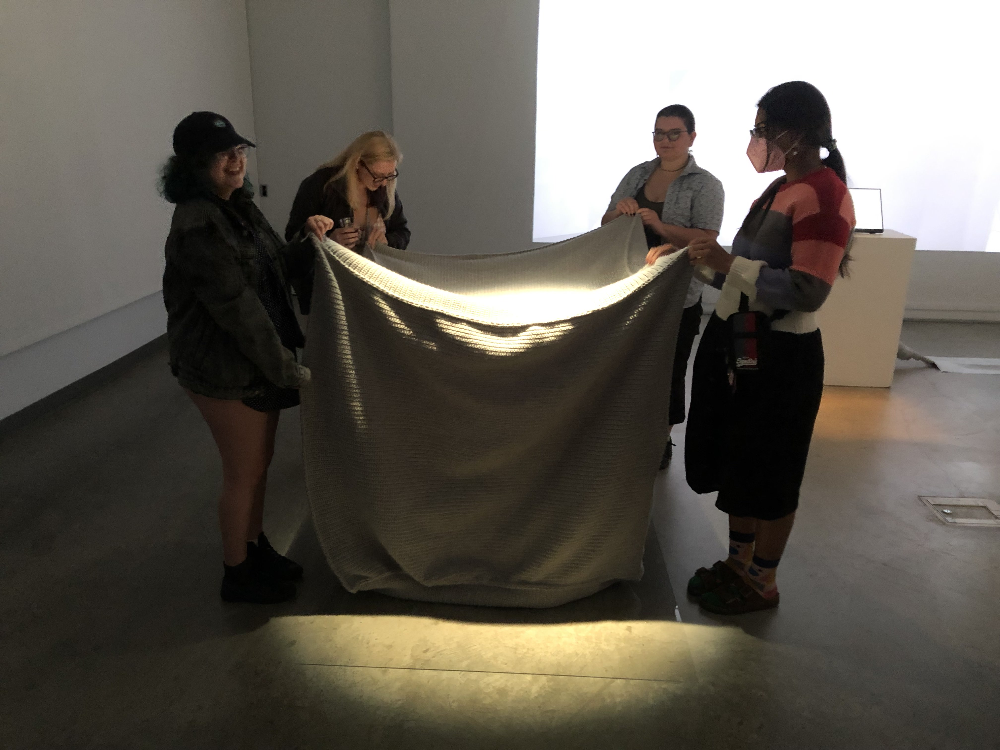
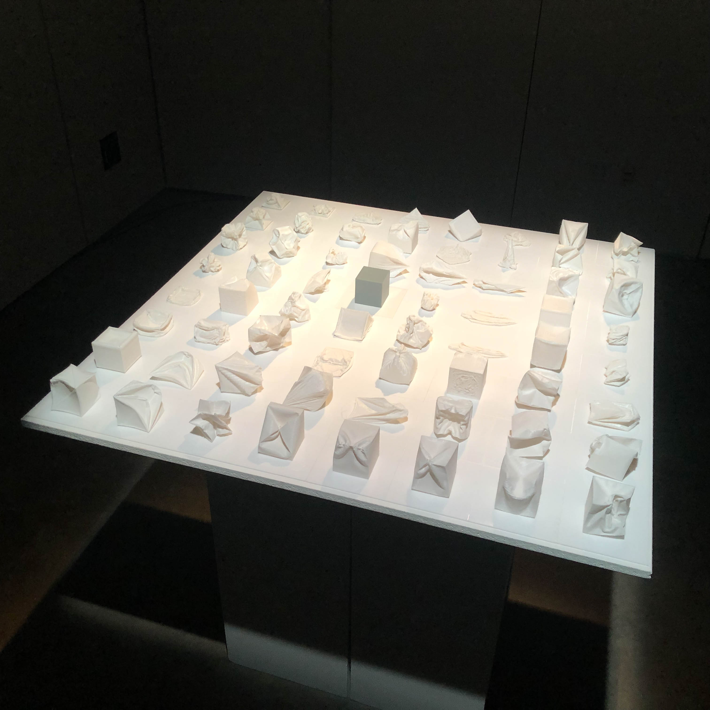
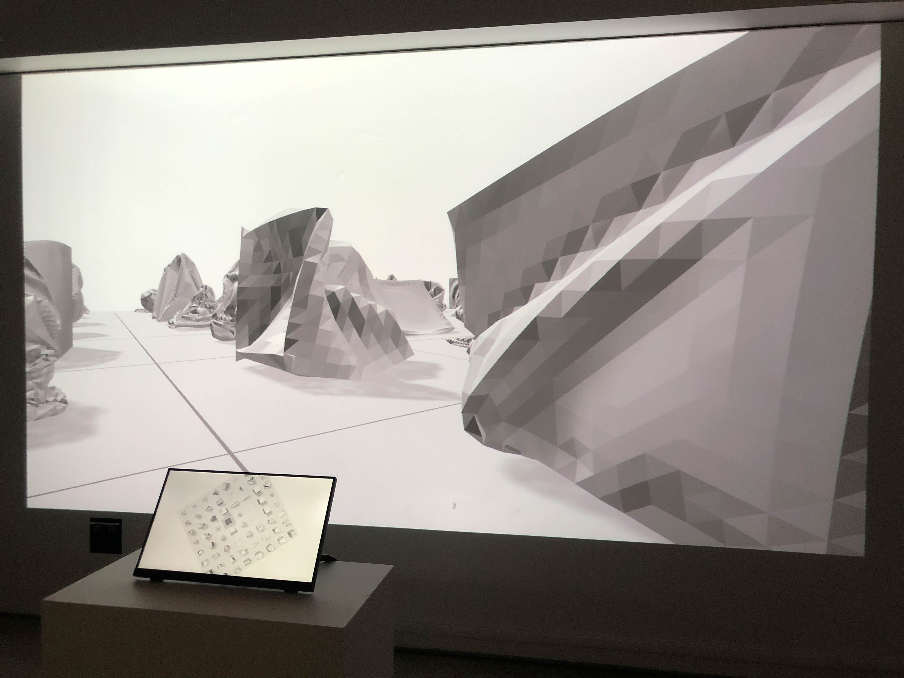
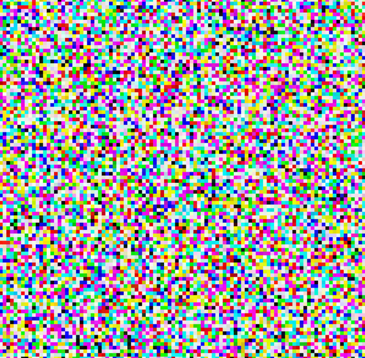
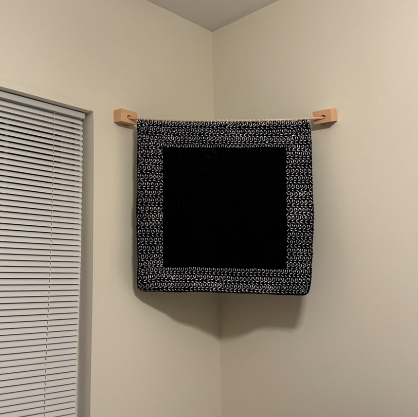
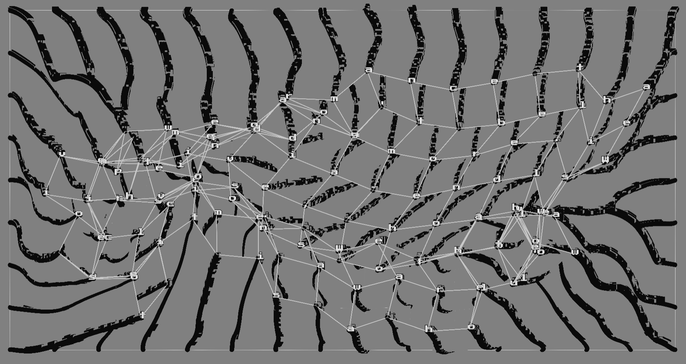
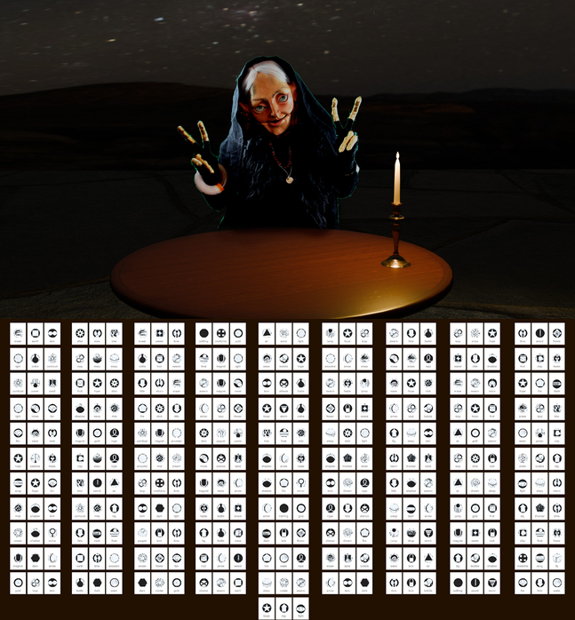

Portfolio - Patrick Stefaniak
PDF version
CV
DREYDL: ZOL ZAYN MIT MAZEL
Slot Machine
2023
In collaboration with Forest Reid. DREYDL: ZOL ZAYN MIT MAZEL is a Gematria slot machine; it speaks to the mystic, the gambler, and the Torah scholar. Beginning with a slot machine adaptation of dreydl, the interactive installation brings the player into the world of paylines and card counting combined with the Jewish mystical practice of alpha-numeric text interpretation.

We also produced a series of 3D printed, 22 sided dreydls, which have one side for each letter of the Hebrew alphabet. This came from a consideration of suprise bonus rounds that happen in slot machines and prompted a new set of rules to be created to extend the traditional top game.
Shtrinkl
Videogame
2022
link to project
In collaboration with Forest Reid. Players can either use a touchscreen or a mouse to play with strings who's configurations reference musical instruments, modern art, computer graphics, and Jewish mysticism. Interspersed in the levels is the Yiddish poem 'Longing' by Rachel Korn.
DRAW!
Videogame
2024
link to project
DRAW! is a videogame where players use the mouse or a touchscreen to draw to the screen using strange, digital strings.

crrrrn2
Acrylic Yarn - 63in x 74in
2024
crrrrrn
3D Environment
2014
link to project
If you were to get lost inside a corn field, you would have almost no sense of direction. The stalks are planted as compactly as possible in regular rows, a process that chokes out biodiversity that wasn't also· killed by pesticides. This environment consists of a large cluster of stalk forms with scattered corn towers which emit tones. Outside the cluster is an empty red horizon with low undulating rumbles. Made in Unity and can be played on a screen or with a VR headset.

CUBEISM
Videogame
2015
link to project
This game is a series of short scenes which contain exactly one cube, monotonous sounds, and any number of cameras. These camera views are layered on top of each other as a literal instantiation of Cubism. By rotating the cube, the player's understanding of this simple form falls apart and opens up in surprising ways. Made in Unity, controller made of acrylic, PLA, and joystick.
"CUBEISM takes the “least expressive” object in Sol LeWitt’s mind and reconfigures it as something intensely emotional, surprising and joyful. It takes on all the trappings of minimalism, in painting, sculpture, and in videogames (simplified controls, limited use of ludic devices, abstract geometric aesthetic, and so on), and makes them genuinely fun, funny and thoughtful. One can play CUBEISM and understand it as a cute exercise exploring Unity camera tools, math and minimalist game design, but one can also understand it as a piece of conceptual art which works as an intertextual, hypertextual satire of the very media to which it pays homage. The limits of our imaginations when it comes to these intersecting media are exposed, simply but boldly, and the intimation is made to us that we can, once again, burst those limits open."
Lana Polansky - "Notes on CUBEISM: Shapes of Grey" - Sufficiently Human - May 27, 2016

Unity Primitive: Cube
Hand Crocheted Acrylic Yarn - 1x1x1 meter
2019-2020
In the Unity 3D game engine the default cube is grey and 1x1x1 unit. In VR and AR applications, the Unity unit translates to a meter in IRL space. For today's game engines rendering a cube is trivial, it can happen in a fraction of a second. Crocheting the same cube with yarn took me a year and a half. The inside is empty. Just like the digital 3D model it is a closed surface of faces. It takes 2 people to hold it up and see the 3 dimensional cube shape, and even then it sags.

A few ways of being a cube
PLA and Acrylic - 4ft x 4ft x 4in
2021
A grid of 64 3D prints of cubes that have been deformed through cloth simulation.

CUBEISM 2: Baroque Edition
Videogame for Touch Screen and Projection or Desktop
2021
link to project
A game with levels where players can play with digital versions of both the 'Unity Primitive: Cube', which is being cloth simulated, and 'A few ways of being a cube'.
everything that contains you is right here
3D Animation - 53:23
2026
link to project
This video is a series of scenes that start from a checkerboard square that then gets distorted by a cloth simulation in the Blender 3D modeling software. Each segment then gets repeated, sometimes multiple times, by the previous video becoming the texture that gets distorted in the same manner creating a distortion effect that becomes even more exaggerated.

double grid (Vasarely's Vega) (i just want to feel possible)
Acrylic paint on acrylic yarn - 61 in x 61 in
2025
This painting is a horizontally compressed version of Vasarely's Vega from 1957. Using Blender, I gathered his painting, like a curtain, and then painted on top of a crocheted grid which mimics the underlying pattern of his composition.
Resolution
Virtual Reality
2025
link to project
When the player enters the VR scene they are on the ground of a seemingly endless grid of black and white. If, while holding the controllers, they raise their arms out and up then they will begin to fly up off the ground and will keep going until they drop their arms. Then they will plummet back to the ground.
Ball Orientation Practice Field
Virtual Reality Golf
2018
link to project
The Virtual Reality headset is attached to a golf ball. When the player hits the ball it remains motionless and the world spins around it. If the player gets their head down on the ground near the ball they can hear it whisper a related passage from Brian Massumi's Parables of the Virtual. Made in Unity.
Firmamentum
Generative animation for screen or VR headset
2024
link to project
Firmamentum looks at the most basic possible image that could be generated, a horizon line, the separation of two otherwise undistinguished spaces.

You wouldn't paint chrysanthemums
Generative Animation
2025
link to project
A 100x100 grid of rectangles where each color value (red, green, and blue) is increased at slightly different rates. When they hit maximum brightness they reset to black. As the piece continues on, what began as a more organized, screen-wide effect turns into swirls of local shapes and colors. Can be shown on a screen or using a projector.

bs (icon! give us nothing!)
Acrylic paint on a acrylic yarn - 79.5 cm x 79.5 cm
2025
P.S.
Particle System Essay
2022
link to project
P.S. is centered on a pun of the initials of my name, particle system, and an array of other things P.S. could stand for. I accumulated texts written both by myself and sampled around other authors swirling around ideas like Roland Barthes by Roland Barthes's fragmented exploration of autobiography and Bruce Nauman's photo of becoming Marcel Duchamp's Fountain, figuring as an endless spout of creativity. These texts are displayed in fragmented spurts on the bottom of the screen while a series of particle systems and synthesized soundscapes play.

Mountains after Mountains (산 넘어 산)
VR Film
2022-23
link to project
I worked with Amy Mihyang Ginther, Susana Ruiz, and Huy Truong on developing Mountains After Mountains, centered on a monologue of Ginther's that was filmed using volumetric video. My role was both to help conceptualize a digital world around the monologue and to build it out and program it in Unity, along with 3D art and animations.

Text_iles
Generative Animation Essay
In Progress
A visual essay connecting ideas from Vilem Flusser's writing on 'technical images' with my own work on the relationship between textiles and computer graphics rendering.
_BwO_DRILLYARD
Videogame Video
2026
link to project
The Buddies without Organs are practicing tackling. In each scene you get anywhere from 1 to 9 points of view, from 1st, 2nd, or 3rd person perspectives, as one BwO tackles another. The figures reference actual automated tackle robots used by football teams.
Shuffling
Videogame Video
2026
link to project
This videogame video shuffles the standard 52 card deck randomly and counts up to try and achieve every possible combination of cards.

The Wizard's Marvellous 100 Hand Tarot
Fortune Telling Machine
In Progress
A collaboration with Remy Gierke, this game merges the mechanics of Black Jack gambling cabinets with the interpretive act of fortune-telling. Players can draw up to 100 tarot hands simultaneously from a digital dealer, The Wizard. The project subverts traditional fortune-tellers by presenting a glut of data, challenging the user to find meaning within an overwhelming system.